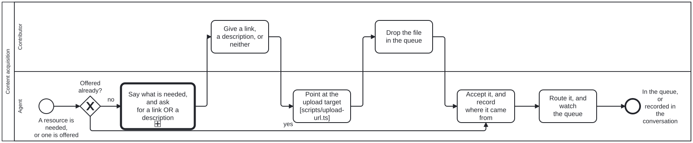

Generated from
cat-harness/processes/library/content-acquisition.bpmnbygen-processes-viz.ts— do not edit here. All processes
Process_ContentAcquisition · advisory · 6 step(s)
How a resource gets into the graph in the first place. document-ingestion.bpmn begins at “a file lands in uploads/” and calls that its only entry point — true of ingestion, and silent on how the file got there. This is the step before it. The channels are plural and the set is open: uploads/ is one, the conversation is another.

| lane | role | what it does here |
|---|---|---|
| Contributor | user |
Both of this lane’s tasks are optional by design, not merely possible: P_Respond’s ‘or neither’ is a real, accepted outcome rather than a stall, and A_Ask already states what happens if nothing comes back — so this lane can contribute nothing at all and the process still proceeds, which is not true of the sign-off lanes elsewhere in this corpus. |
| Agent | ingestion-agent |
This lane is not unattended, unlike the same role elsewhere: A_Ask and A_Route both wait on Lane_Person, for minutes or days, because there is no material yet to make a gate decidable from — that only becomes true once a file or description exists. Acquisition ends at the moment something lands in the queue; everything past that boundary is document-ingestion.bpmn’s actually-unattended run, not this one. |
Every one of the 6 step(s) is documented.
| step | lane | skill / sub-process | what it does |
|---|---|---|---|
Say what is needed, and ask for a link OR a descriptionA_Ask |
Agent | content-acquisition |
Both forms, named together. A person who cannot find the file often knows exactly what it is, and a description in their own words is an acquired resource rather than a consolation prize. Asking for the upload first demands the one thing they may not have, before the cheaper answers have been offered. Say what happens if they do nothing. |
Give a link, a description, or neitherP_Respond |
Contributor | — | “Or neither” is a real outcome, not a failure. The ask says what happens if nothing comes, and then that happens — the work proceeds without the resource and says so. |
Point at the upload target [scripts/upload-url.ts]A_PointToUpload |
Agent | content-acquisition |
Composed from the declaration, never written by hand. The queue is declared with INSTANCE scope, so its declared path is missing the segment a repository-relative forge URL needs: /upload/main/uploads is a 404 and /upload/main/cat-harness/uploads is not, verified against GitHub 2026-09-20. Every failure is named — no origin remote, a non-GitHub forge, a declared-but-absent queue — because a URL is believed, and somebody sent to a wrong one cannot tell it from an empty directory. On failure, fall back to the conversation. |
Drop the file in the queueP_Upload |
Contributor | — | Through the forge’s upload form, a commit, or any other route that lands the file in the declared queue. The agent watches rather than chases: an arrival may be minutes or days away. |
Accept it, and record where it came fromA_Accept |
Agent | content-acquisition |
Both branches land here. An unprompted offer is accepted as it stands — do not make somebody follow a process to hand over what they already have. Provenance is recorded whichever channel it arrived through: a description given in chat has a source and can be wrong, exactly as a PDF does. |
Route it, and watch the queueA_Route |
Agent | uploads-watchlibrary-ingestion |
A file goes to ingestion; a link or a description goes to whatever will resolve it. Acquisition stops here — the moment a file is in the queue, library-ingestion owns it, and keeping that seam sharp is what lets a resource acquired through a channel that does not exist yet reach ingestion unchanged. An arrival may be minutes or days away, so it is watched rather than chased. |
Every one of the 1 decision(s) is documented.
| decision | what decides it | branches |
|---|---|---|
Offered already?GW_Offered |
Did the resource arrive with the request? no: say what is needed and ask for a link or a description. yes: accept it and record where it came from. |
no → Say what is needed, and ask for a link OR a description yes → Accept it, and record where it came from |